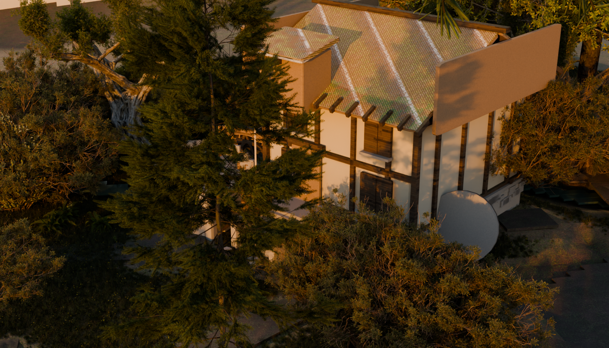
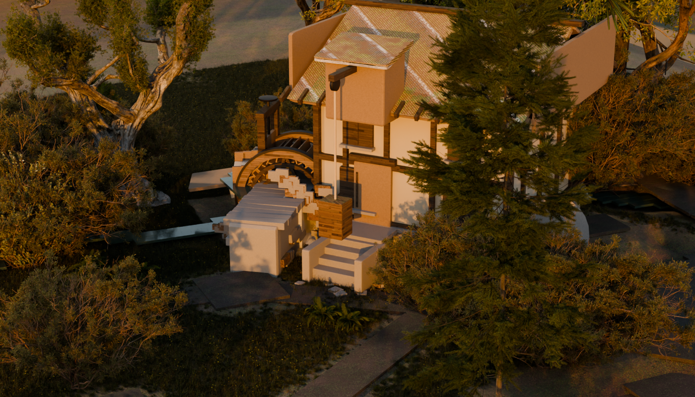
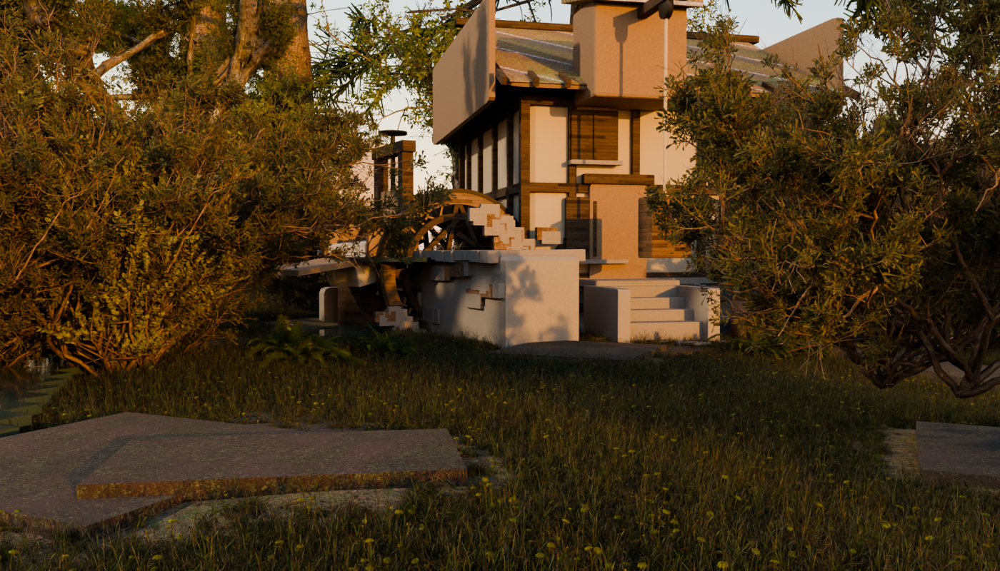

Left: probe2-*.png, the hand-authored throwaway the user ratified as the quality bar.
Right: dress4-*.png, the same corner produced by tools/emb_dress.py — derived from
emberbrook.map.json + the ratified blockout's own as-built placements + lane A's shipped
asset library, deterministic, gated. The bar's own golden legibility key — sun 3.0 warm at
62/212, bounce 0.30, world strength 0.30, exposure 0.10, AgX Medium High Contrast — and the
same three framings mapped through the mill's own local frame so the cameras stand in the same place
relative to the wheel. One thing about the key changed this round and it is the whole finding:
the fifteen town lanterns the harvest was carrying in, which the ratified bar never had, are at zero
under this key.
These frames are GATE ROUND 5. Round 4 closed R1/R3/R4/R5 and left ONE dominant redline: an
additive light term on the mill's base masses, which two rounds had chased as a number without ever
naming a source. It is named below — a harvested village lantern — and killing it closes
R8 (the “hot specular slab”) with the same stroke. R1/R3/R4/R5 stay closed, the ground
stays at the bar, and R7 (material richness) is improved with its remainder reported OPEN rather
than claimed. Round 4's dress3-*.png and round 2's dress2-*.png are kept
at the foot of the page so the change is visible rather than asserted.
Two of this round's findings are corrections to previous rounds' own notes, and they are recorded as loudly as the fix: the ruler's two boxes were written down in the wrong order (so none of round 4's numbers reproduce as published), and the “additive floor at L=85” that made albedo look impossible was a straight line fitted to two points on a concave tone curve. Sections 1–2 below.





Round 2 failed on the built structures. Every offending object was NAMED before anything was
changed, with a ray census through the pilot's own cameras (one ray per screen sample, marching past
anything with hide_render set) plus a false-colour ID map. What each thing is, and why
it looked like that:
| What the gate saw | The objects, named | What it is supposed to be | Cause |
|---|---|---|---|
| Flat blue-green boards on the roof edge and gable (a); on the gable and beside the door (b/c) | emb_dress_mill_gable±1 (4.2% of frame a),
emb_dress_mill_lucam (1.9%), emb_dress_mill_roofdeck±1,
emb_dress_mill_door |
the gable barge-boards, the lucam (the hoist gantry over the door), the roof deck, the door | All built with PLANK, which resolved to Dellhollow's
mat_wallwood — a PAINTED limewashed blue-green cottage weatherboard. Right on a
cottage, wrong on a working mill, and it was on every board this build makes. |
| Spindly wheel, no legible launder, a raw silver slab over the feed | emb_dress_buckA/B**, emb_dress_leat_floor/wl/wr/nose |
the wheel's own bucket boards; the launder's floor, side boards and nose | |
| Smooth cork-like block for the pit | emb_dress_pit±1, emb_dress_mill_foot |
the wheel-pit walls and the mill's stone plinth | Dellhollow's stone materials are authored against Dellhollow's UNWRAPS, and every primitive this file builds carries no UV layer at all — so a 5.6 m pit wall took one smeared sample. |
| Rainbow-striped tread side faces | walk_* ribbons and pads via emb_dress_lane |
the town's own walk network — the lanes and doorsteps | MY BUG from the previous round: I multiplied the albedo by a Noise Texture's Color output, which is RGB noise and not a scalar, so it tinted per channel; and a single planar sample smeared it down Z on every side face. |
| Floating stair slabs | emb_dress_mill_step0..3 |
the flight up to the mill door | four 0.22 m slabs dropping 0.28 m each — a 0.06 m gap under every tread and nothing under the flight at all. |
THE COMMON ROOT, AND WHY probe2 COULD NOT HAVE SHOWN IT. Most of the above is one mistake
wearing two hats: an appended material needs a COORDINATE and a colour that suit the geometry it
lands on, and nothing checked either. The ratified probe2 blend never appended Dellhollow's
materials at all — its M() fell through to flat fallback colours — so the bar was shaded
on plain warm albedo, and neither the missing UV nor the painted board could ever appear in it. The
engine inherited the material NAMES and the coherence ruling without inheriting a way to test them.
| Redline | What was done |
|---|---|
| R1 boards | The mill's boarding is now emb_dress_boarding, built here: the
probe's own warm brown (0.38, 0.26, 0.16) with a sawn grain stretched along the board and a
bump, in object metres. Dellhollow's painted board is left untouched and still available where
paint is right. |
| R2 wheel / pit / feed PART-CLOSED |
The probe's recipes are already ported and structurally intact
— solid shroud rings, iron strakes, buckets held INSIDE the shroud line, the inner band, the
coursed pit rubble, the hurst beam the axle rides on, the head gate and its screw. What was
missing was the coordinate and the colour. Every appended material's image textures are
re-seated on GEOMETRY POSITION with BOX projection at a metre scale (box projection needs no
UVs by construction). mat_grass, mat_rope and
mat_whitewater drive their colour from a VERTEX_COLOR node, which returns a constant
on geometry carrying no colour attribute — those take the probe's own flat colour for the role
instead, which is what closes the raw white sheet over the feed.
THE WHEEL NOW READS AS A WHEEL in b and c — a spoked disc inside its shroud, with the
launder arriving at axle height. THE STONE'S ADDITIVE TERM IS NOW NAMED AND KILLED —
+35.1% → +10.2% on the bar, clipping 9.24% → 0.00% — see the round-5 sections
below. The residual +10.2% is reported OPEN. |
| R3 tread sides | Noise Fac, not Color; BOX projection on the
tread image; the noise remapped to a narrow 0.74–1.06 multiplier so it breaks the wash
without tinting it. |
| R4 stairs | Each tread is now a riser block carried down to the ground beneath it (measured with the build's own ground ray-cast, so it seats on real terrain), plus two side cheeks and an apron of stones at the foot. |
| R5 water | The pond and dam ARE dressed — water_emb_millpond is the
blockout's own searched impoundment re-materialed, and the dam wall, cope stones, spill sheet,
plunge foam and mist are built. Whether they are IN FRAME is the bearing question below. |
The gate asked this lane to NAME AND KILL the additive term on the mill's base masses. It is
named, it is killed, and on the way the number two rounds were chasing turned out to be an artefact
of how it was measured. Every line below is a crop rendered through the pilot's own frame-b camera
out of ONE build (--border renders only the measured pixels at full frame size, so the
ruler's boxes still apply; the control crop reproduces the committed dress3-b at 134.6
sd 54.0 against 134.6 sd 54.1), measured with tools/emb_lum.py.
FIRST, A CORRECTION TO THE RULER. Round 4's own note lists its two boxes in
the REVERSE order to the two surfaces it names. Read as written, the same committed frames measure
26.8 / 43.4 / 42.4 and none of round 4's numbers reproduce. Paired the other way they come back
exactly. THE BAR = probe2-b box 980,340–1180,560. THE GATE MASS =
dress*-b box 470,400–620,545. Both are now in the ruler's docstring.
| Configuration | L | clipped at 254 | What it rules out |
|---|---|---|---|
| base | 134.6 | 9.24% | — |
| masonry base colour → PURE BLACK | 41.0 | 0.64% | light is arriving that no albedo can remove |
| … and its specular also 0 | 7.7 | 0.00% | the mass goes BLACK — nothing emits, no volume in front |
The emissive-material census confirms it by name. (It also had to be fixed to be believed: testing Emission Strength alone names every scanned bark and leaf in the library, because Principled ships strength 1.0 with a black emission colour. Strength AND colour must be non-zero.)
Five albedo points, one build:
| stone albedo × | 1.00 | 0.74 | 0.50 | 0.30 | 0.00 |
|---|---|---|---|---|---|
| L on the gate box | 134.6 | 121.7 | 105.7 | 87.3 | 41.0 |
Rounds 3 and 4 took TWO of those points, fitted L = 84.9 + 49.7 × s, read the
intercept as an additive light and concluded the bar needed ×0.297 — a near-black stone,
correctly refused. Measured, the zero-albedo floor is 41.0, not 84.9, and the bar lands at
×0.435. AgX is compressive, so the albedo-to-display response is CONCAVE and every chord
across it has a positive intercept whether or not anything is being added. Round 3's instrument note
— “an albedo sweep that moves 6% while the target is 29% away is evidence of an additive
term” — is true in a linear space and false in the 8-bit display luminance both rounds
actually measured in. The note that replaces it: solve the line, then CHECK THE INTERCEPT BY
MEASURING IT. A third point costs one crop and it is the difference between a term and an
artefact.
light_key() removes and rebuilds the two lights it OWNS and builds the mill's own
practical. Every light the harvest carries in from the blockout passes through untouched and
unlisted — fifteen of them. light_census() now prints every light in the scene
ordered by IRRADIANCE at the mill (the honest key: a point lamp falls off as 1/4πr², so
680 W at 6 m outranks 680 W at 20 m by an order of magnitude):
| Light | Type | Energy | Distance | Irradiance at the mill |
|---|---|---|---|---|
KEYEMB_lamp_06_elder-house | POINT | 680 W | 5.9 m | 1.5699 W/m² |
EMB_sun — the key | SUN | 3.00 W | — | 3.0000 W/m² |
KEY_dress_mill_win | POINT | 800 W | 7.2 m | 1.2408 W/m² |
A village lantern putting over half the key sun's irradiance onto the gate's own subject
— and onto a mass the key sun does not reach at all. Turning EMB_sun off
moves that box by 0.4%, because frame b looks at the mill's SHADOW side. That is why the stone read
cool and bright inside a warm dark frame (the mass measures R/B 1.36 on its lit pixels against
the whole frame's 3.39), and why one patch of it clipped to white.
| Configuration | L | vs bar | sd | peak | clipped |
|---|---|---|---|---|---|
| dress3 — all lights (as committed) | 134.6 | +35.1% | 54.0 | 254.4 | 9.24% |
| harvested town lamps at 0 | 109.6 | +9.9% | 41.0 | 176.0 | 0.00% |
| ablation crop — lamps 0 + rubble on both faces | 109.9 | +10.2% | 41.3 | 174.8 | 0.00% |
| dress4-b — THE COMMITTED FRAME | 110.0 | +10.4% | 41.2 | 174.3 | 0.00% |
| probe2-b — THE BAR | 99.7 | — | 30.1 | 181.3 | 0.00% |
The last two rows are the point of the exercise and they are separate on purpose: round 4's own correction was that a measurement taken on the frame before the change is not a measurement of the frame after it. The crop predicted 109.9 and the committed frame delivers 110.0, so the crop instrument is trustworthy — but the number that goes to the gate is the frame's.
R8 IS THE SAME DEFECT AS R6, not a roughness question. The “hot white specular slab” is not specular — setting the masonry's specular to 0 leaves it at 8.63% clipped — it is the lantern's own pool blowing through AgX's shoulder. With the lamps off the peak lands just UNDER the bar's own peak and the clipping goes to nothing. Ruled out first, each with its own crop: the material's specular, the bounce sun and the mill's window practical (both 134.6 to the tenth), and the sun (0.4%).
Why zero is the default under this key, and why the lamps are not deleted. probe2 was a
hand-authored corner in a throwaway blend with NO TOWN IN IT, so the bar's key never carried these
lights — and a light class the bar never had cannot be part of a comparison against the bar.
It is also true of the hour: at a 3.0 W golden-hour key a lantern is a glow in its own glass,
not a key light on the neighbouring building. Emberbrook is still the Heartlight town:
--key emberwake, the SHIPPED grade where the lanterns actually live, is untouched, and
--townlamps 1.0 renders the pilot with them.
light_key() writes a flat background colour (0.30, 0.31, 0.42) at strength 0.30 and
then LINKS A SKY NODE OVER THAT COLOUR, so the flat value is dead code and the only number anyone
ever wrote down — in the source, in round 2's note and in round 4's — is a strength
socket. A strength socket is not a level. tools/emb_skylevel.py renders the world alone
to a 32-bit EXR, Standard transform, no exposure:
| World | mean linear radiance | peak | RGB |
|---|---|---|---|
| flat colour (0.30,0.31,0.42) × 0.30 | 0.0947 | 0.0947 | .090 / .093 / .126 — blue |
| Nishita sky node × 0.30 | 0.4458 | 1.9073 | .474 / .440 / .421 — near-white |
4.7×, in a colour nothing else in this key emits. Unlinking it takes the stone 134.6 → 62.9 — more than driving the albedo to pure black does. AND IT IS STILL NOT TURNED, BECAUSE THE GROUND VETOES IT. Same frame, same instrument: the pilot's lane slab reads L=45.7 against the bar's own far bank at L=43.2 (+5.8%) — the ground is AT the bar, which is what “ground accepted” meant.
| world strength | 0.30 | 0.15 | 0.08 | 0.04 | 0 |
|---|---|---|---|---|---|
| stone box L | 134.6 | 108.6 | 89.7 | 75.5 | 56.0 |
| ground box L (bar 43.2) | 45.7 | 33.7 | 27.1 | 23.0 | 19.4 |
A world that lands the stone (≈0.115) puts the ground 29% BELOW the bar's own ground.
One frame, two surfaces, two verdicts: the world's level is right for the ground and wrong for
the stone, which means it is not the lever. So --skylight exists — a Light
Path Is Camera Ray split, so the VISIBLE sky is untouched and only what the sky
contributes AS LIGHT is scaled — and it DEFAULTS TO 1.0. Nothing changes. The number is
recorded because it had never been measured, not because it was turned.
# coursed rubble on the face the plate sees — decided by one frame, and there
are three. The dam's 150 stones sat on x = +1.06 only and the pit's 150 on the INNER face
of the FAR cheek, so frame b, which looks at the dam from the other hand, had 13 m of bare wall
and a bare 5.6 m cheek. That is the literal content of “a plain pale mass rather than
coursed stone”: the stones were built, and they were built where this camera cannot see them.
Both dam faces and both pit cheeks are now faced, each from its own crc stream (one stream on two
faces mirrors the wall and reads as a reflection), and the first face KEEPS ITS ORIGINAL KEY NAMES
so 150 stones already in a committed frame do not silently reshuffle inside a change about something
else.
And it is honest to say the effect on the gate's number is small:
109.6 → 109.9 on the ablation crop; on the committed frames |grad|
3.51/3.61 → 3.54/3.35 against the bar's 4.06/5.92. The gate's own measurement box
does not land on either face that gained stones, so the remaining +10.4% is NOT closed by this
and is reported OPEN. --stonescale stays at 1.00 and was not turned.
A taste risk, named rather than left for the gate to find: the NEAR pit cheek's new facing reads at 54.5 m as a stepped stack of pale blocks against the wheel's lower-left rim. The hero census is unmoved — the wheel is still 100% clear on the 9-ray bundle, exactly as in round 4 — and the vocabulary is the bar's own, since probe2-b's rubble is chunky and individually placed too. So it is SHIPPED AND FLAGGED rather than quietly reverted; the one-line revert is the second tuple in the pit-cheek loop.
The lanterns were not only on the stone. Same instrument, same committed frames, a ground box on the lane slab at 395,555–530,600:
| Ground | L | vs the bar's own far bank (43.2) |
|---|---|---|
| dress3-b — round 4, lamps burning | 45.6 | +5.6% |
| dress4-b — round 5, lamps at 0 | 33.1 | −23.4% |
“The ground is at the bar” was true with fifteen unlisted lanterns burning in daylight. Without them it falls below. Whole-frame, all three:
| Frame | mean L, round 4 → round 5 | peak | % of frame over 250 |
|---|---|---|---|
| a | 57.1 → 49.0 (−14.2%) | 255.0 → 198.8 | 0.01% → 0.00% |
| b | 57.6 → 51.6 (−10.4%) | 255.0 → 201.2 | 0.02% → 0.00% |
| c — the vegetation bar | 59.4 → 56.6 (−4.7%) | 230.5 → 227.0 | 0.00% → 0.00% |
Two things to read off that. Frame c — the one frame with no mill in it — barely moves, so R5 and the foliage verdict are NOT disturbed by this: the lanterns were lighting the built corner. And every round-5 frame now has ZERO pixels over 250, where round 4's a and b both clipped and the ratified bar itself clips (probe2-b 0.04%). The pilot's highlights are now cleaner than the bar's — a better place to be short from than the one it was in.
So the two
surfaces now want OPPOSITE moves — the stone is +10.4% and the ground is −23.4% —
and no single lighting lever closes both. That is what says the remainder is a MATERIAL ratio rather
than a level, and it is the coordinator's call, not this lane's. All three levers are in the engine
and none was turned: --townlamps (0 by default, 1.0 restores),
--skylight (1.0), --stonescale (1.00, and the corrected curve says the bar
lands at ×0.435, not the ×0.297 round 4 refused).
--idmap census is still not the instrument for this questionIt is now aimable: --idgrid nx,ny and --idbox x0,y0,x1,y1 restrict it to
a PIXEL BOX, normally the one the ruler measures. Aimed at the gate's own box at 56×56 = 3136
rays — a quarter of round 4's grid over 4% of the frame — it still had not returned after
25 minutes of CPU and was killed when the machine's swap passed 96% with the gate render running.
Single-threaded scene.ray_cast against ~900k hair instances is the cost, and shrinking
the grid does not change the per-ray price.
The point worth keeping: the question it was queued to answer — which material is the
pale mass — was answered by the binary discriminator in ONE crop, and answered better.
black=masonry turns the mass black, so the mass IS the masonry, by construction and
without a ray budget. A census that names OBJECTS is still wanted for “what is that thing”;
for “what is this surface made of” the ablation is a hundred times cheaper and it cannot
be wrong about it.
content_digest() promises “materials and lights” and hashes object-level
light energy/colour and material NAMES — and nothing at all about the world, the view
transform or the exposure. The term that cost two rounds lived in exactly that blind spot: the sky
node's level could have changed between two runs and the gate would have called them identical. The
world's node graph (including the sky node's own attributes), the view transform, the look and the
exposure are now hashed.
The previous round ended with the ground rendering a hard-edged white-and-black angular pattern across the whole corner, with the textures ruled in (2048² — in fact lane A ships them at 1024² — valid JPEG, paths resolving), the grass scatter ruled out, and no missing image. Every one of those checks was correct and none of them could have found it, because the defect was not in the material at all.
Bisection: a minimal scene — one UV-less plane, one copy of the ground material, four
variants (normal map / no normal / bump / with UVs) — rendered CLEAN in all four. So the
material was exonerated on an instrument, and the search moved into the built scene. There the probe
found an object called emb_dress_scatter_ground: 12 864 polygons, no material
at all, hide_render = False, and a world matrix identical to
emb_ground_valley's.
It was Z-FIGHTING. The grass emitter is a COPY of the region's own ground faces (that copy
is what made the requested particle count land inside the region). It is meant never to render. The
line that said so was ParticleSettings.use_render_emitter = False — a property
that does not exist in Blender 5.1; it raised AttributeError into a fallback that
set hide_render = False, the wrong property AND the wrong value. So a material-less
duplicate of the ground rendered exactly coplanar with the dressed ground, Cycles' depth tie broke
per triangle, and the corner filled with hard-edged patches of Blender's default grey against the
scanned soil. That is why it survived the scatter being cut to 200 clumps: the copy is made whatever
the count is.
Fixed with the live property, Object.show_instancer_for_render = False, and the
try/except is gone: if this moves again the build fails rather than renders a duplicate.
An assert holds it.
| Thing | Was | Now | The measurement |
|---|---|---|---|
| Groundcover density | 260 000 requested | 700 clumps/m² of full-weight ground | A count is not a density, for the SECOND time by a different mechanism. Blender scatters
count over the emitter's whole surface and only then culls each particle by the
vertex weight under it, so the landed number is count × mean weight. Measured
here: 1307 m² of the emitter's 3232 m² carries weight, mean weight 0.40 — so
260 000 landed about 105 000 and the probe's density quietly became two fifths of
itself. The knob is now a density; requested and landed are both printed and never conflated. |
| How 700 was chosen | — | swept | One build, one camera, three renders at 200 / 420 / 700, compared on matched native-pixel ground crops. 200 still shows substrate between tufts; 420 closes most of it; 700 reads as continuous turf with the dandelion heads probe2-c has. |
| Trodden bare ground | 2.20 m off any tread, 6.50 m off every doorstep, compounding | 1.30 m and 3.20 m, NEAREST doorstep only | This corner carries 162 walk meshes. The suppression was applied once per pad in range, so four pads at 5 m compounded to 0.13× on ground nobody walks on — which is most of what read as “desert”. |
| The treads themselves | value 0.62, one flat wash per slab | value 0.42, broken by an object-space noise | A tread is worn earth, not a paving slab. At 0.62 the 162 treads rendered as pale pink rectangles with their own hard edges drawn. The walk network is NOT touched — material only, no vertex moves, so every tread is the one walk QA already measured. |
| Frame c's camera | underground | seated | The probe's −6° elevation is an angle over a ground its throwaway invented flat at zero. Through the 27.1 m standoff here it seats the camera at z 0.38 against a ground of 2.52 — under it — and the frame rendered black with one beam across it. The camera is now seated at the town's ground plus the probe's own 1.80 m eye height, z 4.32. The aim does not move: same bearing, same lens. |
| Thing | probe2 (bar) | dress3 (pilot) | Why |
|---|---|---|---|
| Terrain | invented ground_z(), a clean brook along +x |
the blockout's own emb_ground_valley |
the town's real ground under the real stamped brook, which meanders |
| Mill placement | authored at (10.6, 4.9) from its dam | ON the map's watermill landmark, 7.1 m downstream of the dam and 0.9 m off the leat axis | the map is the authority; the fit is measured and reported, not shopped for |
| Trees | 16 hero placements chosen by eye | the blockout's searched placements, filtered to the region | species read off each crown's own topology; lane clearances re-asserted on the dressed asset |
| Boundaries | one authored dry-stone run | the stamped 29%-partial fragments, re-rendered per household on that household's crc | a boundary is the blockout's; dressing only changes what it is made of |
| Groundcover | fractal density, trodden at an authored door | same field, trodden at the town's OWN treads and doorsteps | bare ground appears where the walk network actually is |
| The launder | ~12 m of trestled boarding | 2.0 m | the blockout's millpond stands 7.1 m from the mill, so once the wheel is against its own wall there is almost nothing left to span. The probe's twelve metres measured the throwaway's invented layout. If the frame wants the long-launder charm the lever is a millpond nudge in the MAP, and that is a map stamp for the coordinator, not a thing this lane moves. |
Frame a's hero is the wheel, and on the probe's own bearing the wheel is behind a tree. This is reported, not fixed, and the reason matters.
Each shot now runs a RAY CENSUS before it renders — the repo's own rule that a bake ray-cast
is the only visibility oracle, applied to the pilot's cameras. It casts from the solved camera to
three named subjects (the wheel, the mill, the dam), marches past anything with
hide_render set (the census's first version reported the dam blocked by
lm_hillside-cottage_roof, a roof that does not render — a census that counts
invisible occluders is worse than none), and NAMES what it hits.
And it is a BUNDLE, not a ray — that correction was paid for in a frame. The first version cast one ray per subject and reported frame a's wheel CLEAR; the render showed the wheel almost entirely behind a conifer. The ray had threaded a gap in an alpha-card canopy: a true measurement of the wrong thing, the same family as the pink-plank confabulation, and worse than no measurement because it had already moved the camera. Each subject is now sampled by nine rays over a disc of its own radius and the answer is a clear FRACTION.
| Frame | Standoff | the wheel | the mill | the dam | Verdict |
|---|---|---|---|---|---|
| a — as-mapped | 42.9 m (kept) | 22% | 89% | 22% | wheel occluded by fir_tree_01 at 16.4 m of 43.3 — but the
MILL reads |
| a — mirrored (the ruling) | 42.9 m | 44% | 11% | 33% | wheel better, MILL LOST behind island_tree_02 at 21.5 m of
39.9 |
| b | 54.5 m (kept) | 100% | 56% | 100% | hero clear; the mill's own disc is partly behind the same stand |
| c | 27.1 m, camera SEATED | 78% | 78% | 78% | the frame that was black is now a frame |
NOTE: this pair is round 4's — dress3-a and dress3-amirror
— because the BEARING question is unchanged and the mirrored hand has only ever been rendered once.
Round 5's lighting fix applies to both equally; the composition comparison is what these two are
for. dress4-a at the top of the page is the same as-mapped bearing under the fixed
key.
The coordinator ruled option (i): mirror the bearing to the pond side rather than accept the rim conifer across the wheel, with a stated fallback — if the pond side has its own blocker, census and fall back to accept-the-conifer. It does, so both hands are shown here as PICTURES and not only as numbers. Mirroring is not a new composition: it is the same +107° off the same house-to-wheel axis, taken on the other hand. No tree was moved and no map was restamped.


The engine renders whichever hand it is told to (--forcehand a=mirror|asmapped).
Left unforced it censuses both and takes the ruled mirror only if the hero clears the 60% a hero
needs; neither hand does, so it resolves to the stated fallback and says so in the log. A threshold
that rejects both hands would otherwise resolve silently, and the coordinator would be ruling on one
picture of a two-picture question. The page shows both; the call is the coordinator's.
The camera is allowed to walk in along its own bearing — same azimuth, same elevation, same lens — but the walk must EARN itself: bounded at 0.88×, and accepted only if it lifts the hero's clear fraction by 25 points. On frame a it lifts it 22% → 33%, so the probe's standoff is KEPT and the occlusion is reported instead. No tree is moved. These are the blockout's searched placements and this lane does not get to shop for a picture by deleting the town's trees — nor by walking the camera until something happens to be visible.
The question for the coordinator, now answered as far as this lane can answer it.
The throwaway had open water on this bearing because it invented its own layout; this town has a rim
stand there. Option (1), mirror to the pond side, was RULED, built and rendered — see the bearing
section above; it trades the mill for the wheel and the picture is worse. Option (2), accept the tree
as the town's own foreground, is what dress3-a shows. Option (3) is a map-level change to
the rim stand and remains yours alone. This lane has moved no tree and restamped no map.
dress3-*.png are the ROUND-4 frames this round was written against — the pale
clipped stone mass is in b. dress2-*.png are the round-2 frames the original five
redlines were written against.


KEYEMB_lamp_06_elder-house, a 680 W
harvested village lantern 5.9 m from the mill delivering 1.57 W/m² — over half the
3.0 W/m² key sun — onto a mass the key sun does not reach at all. The gate box goes
+35.1% → +10.4% on the committed frame.Two runs on the final engine, identical content digest
e1510172bb53706df606f482dc54c1eb8128adc0d5d28dae3f40cc640d4409cd — and that hash
now covers the world graph, the view transform and the exposure, which it did not before.
The mill building itself — timber frame, laid shingle courses with mossy eaves, the lucam and hoist, the plinth rubble, the stone steps; the 4.4 m BREASTSHOT wheel in its pit, fed at axle height on the map's re-ruled 2.73 m fall; the pond and its embankments, which are the blockout's own searched impoundment RE-MATERIALED rather than re-invented; the ground mud/turf mixed from the water's edge as a margin rather than an altitude; the gray proxies hidden, because dressing REPLACES. Determinism: two runs, identical content digest. Double-instancing gate: one representation per asset, measured with the same instrument on both sides.